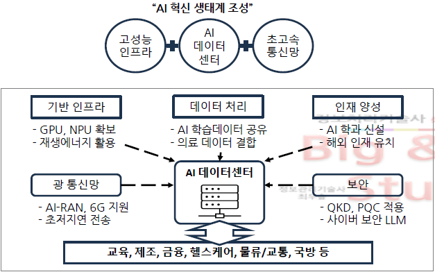
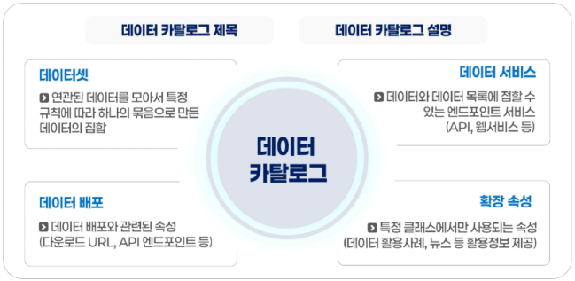

(가명처리) (총계처리) (삭제) 부분, 행, 로컬 (범주화) 일반, 랜덤, 제어 라운딩, 상하단코딩 (마스킹) 전각 대체
147. 합성데이터 생성·활용 안내서(2024.12) · 생성/활용절차사생안심활
출처: 가이드라인
설명 보기
사전준비 → 합성데이터 생성 → 안전성/유용성검증 → 심의위원회 평가 → 활용 및 안전한관리
148. 합성데이터 생성·활용 안내서(2024.12) · 안전성지표위험도,
출처: 가이드라인
설명 보기
연결위험도, 추론위험도) 비정형(생성과정, 이미지유사성)
149. 합성데이터 생성·활용 안내서(2024.12) · 안전성지표위험도,
출처: 가이드라인
설명 보기
추론위험도) 비정형(생성과정, 이미지유사성)
150. 합성데이터 생성·활용 안내서(2024.12) · 유용성지표유사성,
출처: 가이드라인
설명 보기
2차원관계 유사성, 구별불가능성) 정형/비정형(모형 성능 유사성) 비정형(Visual Turing Test, 이미지 품질검증)
151. 합성데이터 생성·활용 안내서(2024.12) · 유용성지표유사성,
출처: 가이드라인
설명 보기
구별불가능성) 정형/비정형(모형 성능 유사성) 비정형(Visual Turing Test, 이미지 품질검증)
152. 합성데이터 생성·활용 안내서(2024.12) · 유용성지표) 비정형(
출처: 가이드라인
설명 보기
Visual Turing Test, 이미지 품질검증)
153. 글로벌 CBPR · 인증기준관리체계
출처: 가이드라인
설명 보기
, 개인정보수집, 개인정보위탁/이용/제공, 정보주체 권리보장, 무결성, 보호대책
154. 글로벌 CBPR · 인증기준수집
출처: 가이드라인
설명 보기
, 개인정보위탁/이용/제공, 정보주체 권리보장, 무결성, 보호대책
155. 하드웨어 규모 산정 지침(2023.12) · 방법수참시
출처: 가이드라인
설명 보기
수식계산, 참조법, 시뮬레이션법
1. 법률
소프트웨어 진흥법
교재 p.14
현황
구분
내용
현황
공공SW사업 과업심의위원회 형식적 심의 → 심의결과 실질반영X. 실효성 논란 → 2026 SW진흥법 개정안 상정 → 공정 중간 단계에서 과심위 의무 개최 규정
* 과업 변경 및 계약 조정 따른 계약금액 조정에 SW진흥법 단독 개정에 한계 존재 → 국가계약법 연동 필요 주장
에너지, 먹는물, 보건의료, 의료기기, 원자력, 범죄수사, 채용/대출, 교통수단, 공공서비스, 교육
📂 하위 토픽 (6)접기/펼치기
인공지능 투명성 확보 가이드라인
교재 p.132
암기: 사전고지의무
법적근거의무사항대상적용제외
AI기반서비스 이용사실과 결과물의 AI생성 여부 고지를 의무화한 가이드라인
구분
내용
법적근거
인공지능 기본법 제 31조, 인공지능 기본법 시행령 제 23조
의무사항
(1) 사전고지의무 (2) 표시의무 (3) 딥페이크 생성물 표시의무
대상
서비스 제공자, API 활용 사업자, 모델 개발자, 해외 사업자
적용제외
단순이용자, 결과물 활용자, 콘텐츠 제작자
인공지능 안전성 확보 가이드 라인
교재 p.134
법적근거적용대상위험관리 절차위험관리/완화 방안연산량 확인 방식판단기준
인공지능 안전성 확보 의무를 이행하는 데 필요한 기준과 절차를 정리한 문서.
구분
내용
법적근거
인공지능 기본법 제 32조, 인공지능 기본법 시행령 제 24조
적용대상
(대상AI) 연산량 10^26 FLOPs 이상, 기본권 영향 가능성 AI (의무주체) 원인행위 수행자, 개발사업자, 변경사업자
위험관리 절차
위험 식별 → 위험 평가 → 위험 완화
위험관리/완화 방안
대응조직 구성, 대응절차 수립, 교육/훈련 수행
연산량 확인 방식
((이론적)) (설계기반) 파라미터 x 토큰 x 연산반복횟수 (모델구조기반) 2 x 모델 내 연산 연결수 x 3 x 학습예제 수 x 연산반복횟수
((경험적)) (계수기반) 6 x 파라미터 x 토큰 (시퀀스기반) {3 x 시퀀스당 부동소수점연산수 x 토큰} / 시퀀스길이
((GPU기반))(단일 GPU) GPU 성능 x 총 사용시간 (다중GPU) 학습시간 x GPU 수 x 1대당 최대 FLOPs x 평균 가동률
판단기준
누적 연산량, 학습 과정 모니터링, 누적 연산량 포함범위, 누적 연산량 제외버위, 누적 연산량 산정 및 추정
고영향 인공지능 판단 가이드라인
교재 p.138
법적근거판단기준의무사항확인절차
사람의 생명, 신체, 기본권에 중대한 영향을 미치는 AI 시스템을 판단하기 위한 가이드라인
구분
내용
법적근거
인공지능 기본법 제 33조, 인공지능 기본법 시행령 제 25조
판단기준
(1단계) 영역 조건 (2단계) 위험 조건 (최종판단) 1, 2단계 모두 충족 시 고영향 인공지능.
(1단계 영역조건) 에너지, 먹는물, 보건의료, 의료기기, 원자력, 범죄수사, 채용/대출, 교통수단, 공공서비스, 교육
(2단계 위험조건) 생명, 신체, 기본권에 중대한 영향 또는 위험초래 가능성
의무사항
고지 의무, 안전/신뢰 확보조치
확인절차
확인요청서 제출 → 검토 범위설정 → 전문위원회 자문 → 의견 종합 → 결과 판단
고영향AI*사업자 책무 가이드라인
교재 p.141
법적근거책무사항
고영향 인공지능 사업자의 안전성/신뢰성 확보 의무 이행 절차 및 기준을 제시한 가이드라인.
구분
내용
법적근거
인공지능 기본법 제 31조, 34조 인공지능 기본법 시행령 제 27조
책무사항
(1) 위험관리방안 수립/운영 (2) 기술적 가능 범위 내 설명방안 (3) 이용자 보호방안 수립/운영 (4) 고영향 AI 인간 관리/감독 (5) 안전성/신뢰성 확보조치 문서화
인공지능 영향평가 가이드라인
교재 p.143
법적근거목적평가대상수행주체평가시기수행절차
고영향 AI가 인간에 미치는 영향을 식별/분석하고 개선방안을 마련하도록 유도하는 가이드라인
구분
내용
법적근거
인공지능 기본법 제 35조, 인공지능 기본법 시행렬 제 28조
목적
기본권 영향 사전 식별, 글로벌 규제 대응, 선제적 리스크 관리, AI서비스 자율적용 확대
(사전협의) 검토항목 4개 → 5개, 타 정보시스템 연계성 검토여부, 영향평가 결과서 제출여부 추가
(운영성과관리) 성과지표 사례 추가, 통폐합 유형/방법 추가, 직전성과우수 시스템 대상예외, 성고관리심의위원회 인정 시 폐기예외
(모바일앱) 모바일앱 성과관리 업무메뉴얼 추가
추진근거
전자정부법 제 23조(효율적 관리), 68조(성과분석), 전자정부법 시행령 19조(통합기준, 절차), 84조(성과분석 및 진단)전자정부 성과관리 지침 고시(체계, 절차 규정)
강화인증(+20개) 표준인증(80, 101), 간편인증(44, 65)
(강화인증 대상) 매출 1조 이상 ISP/IDC, 매출 3조 이사 정보통신서비스 제공자
(강화인증 기준) 최고책임자 지정, 정보자산 식별 강화, 무결성 검증, 자동화된 계정관리, 사용자 인증 강화, 인증정보 관리, 네트워크 접근 강화
(CVD-VDP 제도)정부, 화이트해커 합법화 추진하여 취약점 신고/조치/공개제도 시범도입 → 사이버 보안 위협에 선제적 대응 위한 상시 보안 점검체계 구축 목적.
현황
2026.03 AI고속도로 구축사업 추진, 약 2조원대 GPU 인프라 투자. → GPUaaS CSP 대상 공모 진행 → AI프로젝스, 산학연, 스타트업 지원에 활용
📂 하위 토픽 (2)접기/펼치기
AI 고속도로 구축
교재 p.309
추진내용
★ 빈출AI 컴퓨팅 인프라 및 인재양성, 보안성을 확보하기 위한 국가 AI 전략.
구분
내용
추진내용
(인프라) 핵심 AI컴퓨팅 인프라, AI데이터센터 생태계, AI 서비스 기반 고도화
(데이터) 국가 데이터 통합플랫폼 구축, AI데이터 공유 생태계, 보건의료 AI데이터 확충
(생태계) 국가 과학 AI 통합 플랫폼, 국가 AI 데이터 거버넌스
(보안) AI보안 생태계 활성화(CVD/VDP), AI 사이버 보안 체계 구축, AI안보 대응 강화

보안 취약점 신고·조치·공개 제도(CVD/VDP)
교재 p.311
필요성구성체계적용 로드맵
★ 빈출취약점 사전공개(VDP) 및 조치사항 공개(CVD)를 통한, 기업과 화이트해커 간의 협력 기반 선제적 취약점 관리체계.
항공기 안전성(기체설계, 다중추진, 비상착륙) 자율비행(위치인식, 비행제어, 감지회피) 교통관리(항공관제연계) 통신(버티포트, 6G)
현황
정부, 2030 모빌리티 혁신성장 로드맵 → 자율주행 및 UAM 상용화 일정 구체화. → 2028 공공중심 상용화, 2030 민간주도 서비스 확산 로드맵. 체계정비, 인프라 구축, 기술개발 지원
하드웨어 규모 산정 지침(2023.12)
교재 p.441
암기: 수참시
표준절차방법
HW 필요 규모 산정 지침.
구분
내용
표준
TTAK.KO-10.0292/R3
절차
자료조사→업무분석→참조모델/규모산정→가중치적용
방법
수참시. 수식계산, 참조법, 시뮬레이션법
금융분야 클라우드컴퓨팅서비스 이용 가이드
교재 p.443
이용절차
금융사가 클라우드컴퓨팅 서비스 이용 위한 절차 및 보안사항. 클라우드컴퓨팅법 제2조3.
구분
내용
이용절차
업무선정,중요도평가 → CSP평가 → BCP 및 안전성확보 → 정보보호위원회 심의→ 계약체결 → 이용 및 보고 → 이용종료
FedRAMP
교재 p.445
국가 데이터 통합 연계를 위한 데이터 카탈로그 표준 가이드(2025.11)
교재 p.450
특항목구성
국가 데이터 자원을 체계적으로 관리 및 효율적 공유/활용을 위한 국가차원 메타데이터 표준 마련 가이드.
구분
내용
특
연합데이터 카탈로그 체계, 데이터 카탈로그 국제표준 준수(DCAT-AP 2.1) 국가 데이터 통합플랫폼(One-Window) 연계
항목구성
(공통) 카탈로그, 데이터셋, 데이터서비스, 배포, 카탈로그 코드
(확장) 데이터상품, 데이터 큐레이션, 데이터 품질

NET(New Excellent Technology, 신기술 인증) 제도
교재 p.454
안티드론 시스템 프레임워크 (TTAK.KO-10.1460,2023.10)
교재 p.455
3차 지능형 전력망 기본 계획
교재 p.457
암기카드
법률
소프트웨어 진흥법 — [현황]?
공공SW사업 과업심의위원회 형식적 심의 → 심의결과 실질반영X. 실효성 논란 → 2026 SW진흥법 개정안 상정 → 공정 중간 단계에서 과심위 의무 개최 규정 * 과업 변경 및 계약 조정 따른 계약금액 조정에 SW진흥법 단독 개정에 한계 존재 → 국가계약법 연동 필요 주장
제3자기업 공정한 Access보장, 광고효과측정 데이터제공, 자사 우대금지, 자사 서비스간 데이터공유금지.
법률
EU_디지털 시장법 (DMA) — [과징금]?
최대 매출10%
법률
EU_ AI ACT법 — [위험기반 접근방식]?
허용불가 위험(금지), 고위험(적합성 평가), 제한적 위험(투명성 의무), 최소 위험(저위험)
법률
EU_ AI ACT법 — [GPAI규제]?
투명성 의무, 영향력있는 GPAI
법률
인공지능 기본법 — [용어 정의]?
고영향 AI, 생성형AI, 고성능AI
법률
인공지능 기본법 — [의무]?
투명성, 안전성, 사전확인, 사업자책무, AI영향평가
법률
인공지능 투명성 확보 가이드라인 — [법적근거]?
인공지능 기본법 제 31조, 인공지능 기본법 시행령 제 23조
법률
인공지능 투명성 확보 가이드라인 — [의무사항]?
(1) 사전고지의무 (2) 표시의무 (3) 딥페이크 생성물 표시의무
법률
인공지능 안전성 확보 가이드 라인 — [법적근거]?
인공지능 기본법 제 32조, 인공지능 기본법 시행령 제 24조
법률
인공지능 안전성 확보 가이드 라인 — [적용대상]?
(대상AI) 연산량 10^26 FLOPs 이상, 기본권 영향 가능성 AI (의무주체) 원인행위 수행자, 개발사업자, 변경사업자
법률
고영향 인공지능 판단 가이드라인 — [법적근거]?
인공지능 기본법 제 33조, 인공지능 기본법 시행령 제 25조
법률
고영향 인공지능 판단 가이드라인 — [판단기준]?
(1단계) 영역 조건 (2단계) 위험 조건 (최종판단) 1, 2단계 모두 충족 시 고영향 인공지능. (1단계 영역조건) 에너지, 먹는물, 보건의료, 의료기기, 원자력, 범죄수사, 채용/대출, 교통수단, 공공서비스, 교육 (2단계 위험조건) 생명, 신체, 기본권에 중대한 영향 또는 위험초래 가능성
법률
고영향AI*사업자 책무 가이드라인 — [법적근거]?
인공지능 기본법 제 31조, 34조 인공지능 기본법 시행령 제 27조
법률
고영향AI*사업자 책무 가이드라인 — [책무사항]?
(1) 위험관리방안 수립/운영 (2) 기술적 가능 범위 내 설명방안 (3) 이용자 보호방안 수립/운영 (4) 고영향 AI 인간 관리/감독 (5) 안전성/신뢰성 확보조치 문서화
법률
인공지능 영향평가 가이드라인 — [법적근거]?
인공지능 기본법 제 35조, 인공지능 기본법 시행렬 제 28조
법률
인공지능 영향평가 가이드라인 — [목적]?
기본권 영향 사전 식별, 글로벌 규제 대응, 선제적 리스크 관리, AI서비스 자율적용 확대
(사전협의) 검토항목 4개 → 5개, 타 정보시스템 연계성 검토여부, 영향평가 결과서 제출여부 추가 (운영성과관리) 성과지표 사례 추가, 통폐합 유형/방법 추가, 직전성과우수 시스템 대상예외, 성고관리심의위원회 인정 시 폐기예외 (모바일앱) 모바일앱 성과관리 업무메뉴얼 추가
(인프라) 핵심 AI컴퓨팅 인프라, AI데이터센터 생태계, AI 서비스 기반 고도화 (데이터) 국가 데이터 통합플랫폼 구축, AI데이터 공유 생태계, 보건의료 AI데이터 확충 (생태계) 국가 과학 AI 통합 플랫폼, 국가 AI 데이터 거버넌스 (보안) AI보안 생태계 활성화(CVD/VDP), AI 사이버 보안 체계 구축, AI안보 대응 강화